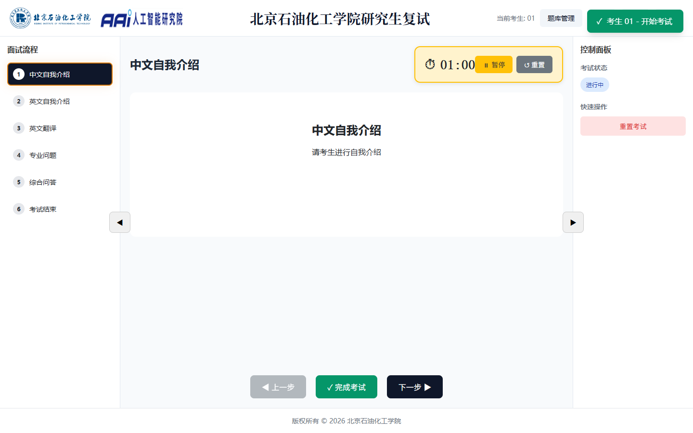
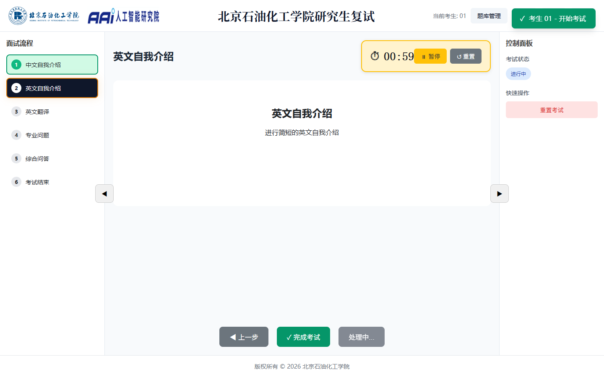
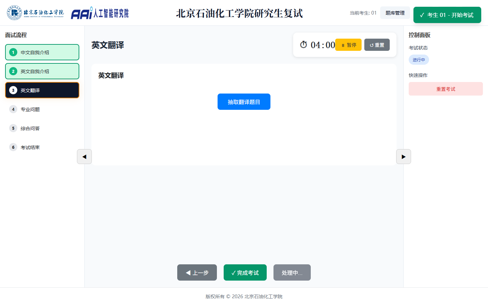
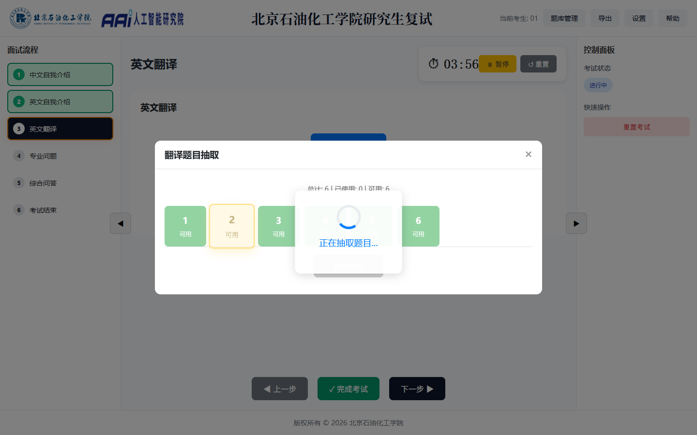
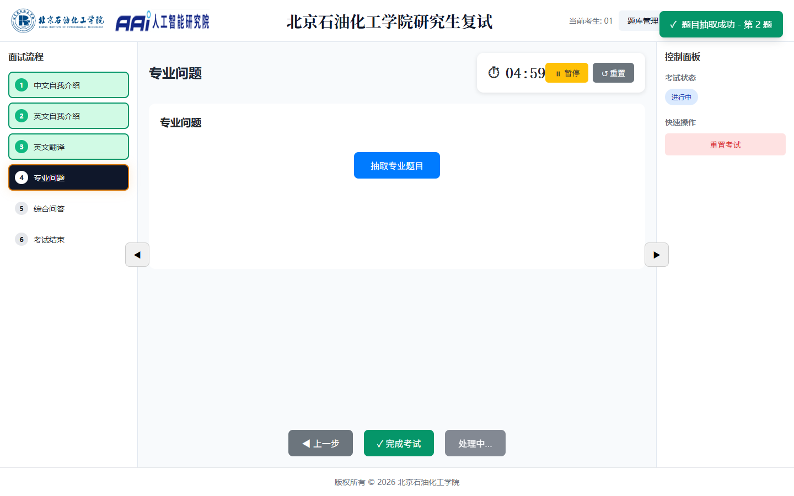
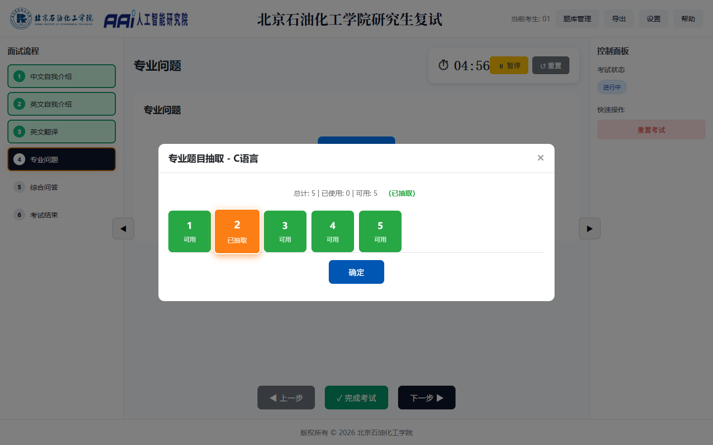
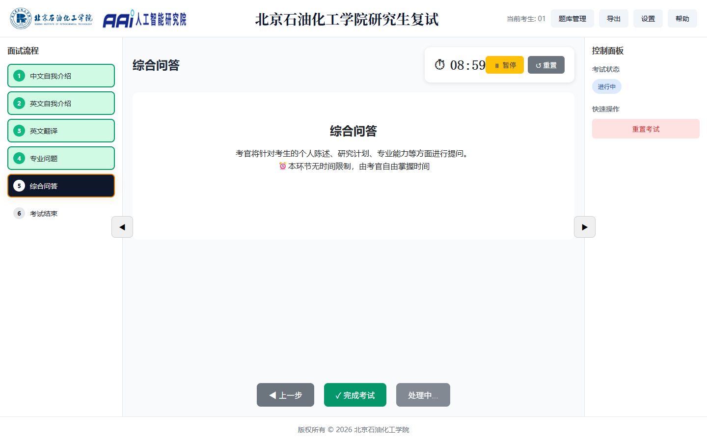
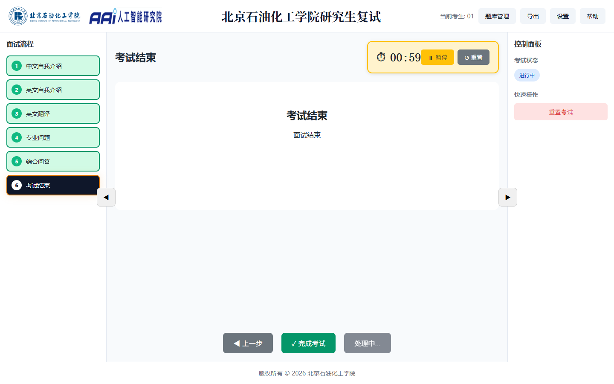

考试系统使用指南
研究生复试流程控制系统 · Exam System User Guide
系统概述
研究生复试流程控制系统是用于管理研究生复试面试全流程的操作界面，为考官和系统管理员提供便捷的面试控制工具。
- 六步考试流程：中文自我介绍 → 英文自我介绍 → 英文翻译 → 专业问题 → 综合问答 → 考试结束
- 流程控制面板：左侧面板实时显示考试进度，支持步骤切换和状态追踪
- 随机抽题：系统从未使用题目中自动随机选择，确保考试公平性
- 计时控制：每个环节独立计时，支持开始、暂停、重置
- 考生记录：自动记录每位考生的考试进度、抽取题目和完成状态
- 快捷键支持：支持键盘快捷操作，提升考试控制效率
提示：如需了解具体操作步骤（如何开始考试、如何抽题、如何使用快捷键等），请查看本页面各章节的详细说明。
界面布局

图 1：考试系统主界面 — 左侧流程面板 + 中央内容区 + 右侧控制面板
区域划分
| 区域 | 位置 | 内容说明 |
|---|---|---|
| 顶部标题栏 | 页面最上方 | 系统标题、学校 Logo、学院 Logo、导航按钮（题库管理、导出、设置、帮助） |
| 左侧流程面板 | 左侧（可折叠） | 六步考试流程列表，显示当前步骤和完成状态 |
| 中央内容区 | 中间主区域 | 考试题目、步骤指导说明、计时器、上一步/下一步/完成考试按钮 |
| 右侧控制面板 | 右侧（可折叠） | 考试状态徽章、重置考试按钮 |
| 底部状态栏 | 页面最下方 | 版权信息 |
面板折叠：左侧流程面板和右侧控制面板都有折叠按钮（◀ / ▶），点击可收起或展开面板，为中央内容区腾出更多空间。
流程控制详解
步骤 1：中文自我介绍

图 1：中文自我介绍 — 点击"开始考试"后进入步骤1
考官操作流程
- 点击开始考试按钮初始化考生会话
- 系统自动进入步骤1，计时器归零
- 点击开始按钮启动计时，考生进行自我介绍
- 如需暂停，点击暂停按钮保留剩余时间
- 时间到达或考生完成时，点击下一步 ▶进入下一环节
步骤 2：英文自我介绍

图 2：英文自我介绍 — 进入步骤2后进行英文自我介绍
考官操作流程
- 点击下一步 ▶从步骤1进入步骤2
- 系统自动进入步骤2，计时器归零
- 点击开始按钮启动计时，考生进行英文自我介绍
- 如需暂停，点击暂停按钮保留剩余时间
- 时间到达或考生完成时，点击下一步 ▶进入下一环节
步骤 3：英文翻译


图 3：英文翻译 — 抽取翻译题目后启动计时
考官操作流程
- 进入步骤3后，点击抽取翻译题目按钮
- 在弹出的翻译题库中随机抽取一道题目
- 题目抽取后点击开始抽取确认，再点"×"关闭
- 点击开始按钮启动计时，考生进行翻译
- 计时结束后，点击下一步 ▶进入专业问题
步骤 4：专业问题


图 4：专业问题 — 选取科目后抽取专业题目
考官操作流程
- 进入步骤4后，点击抽取专业题目按钮
- 在弹出的科目选择中选取科目，点击确定
- 系统从该科目题库随机抽取一道专业问题
- 点击开始抽取确认，再点"×"关闭
- 专业题可能含图片，图片显示在题目下方
- 点击开始按钮启动计时
- 计时结束后，点击下一步 ▶进入综合问答
步骤 5：综合问答

图 5：综合问答 — 考官自由提问，综合考察考生
考官操作流程
- 进入步骤5后，系统显示综合问答说明
- 本环节无固定题目，由考官自由提问
- 本环节无时间硬性限制，由考官自行掌握
- 问答结束后，点击下一步 ▶进入考试结束
步骤 6：考试结束

图 6：考试结束 — 所有步骤完成，显示结束界面
考官操作流程
- 点击下一步 ▶后，系统自动保存考生考试记录
- 所有步骤状态更新为已完成，显示考试结束界面
- 可点击开始考试为下一位考生初始化